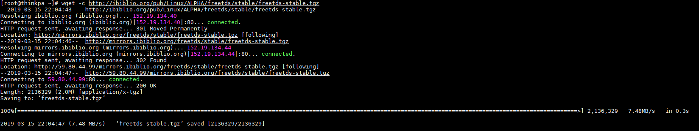
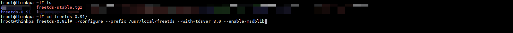
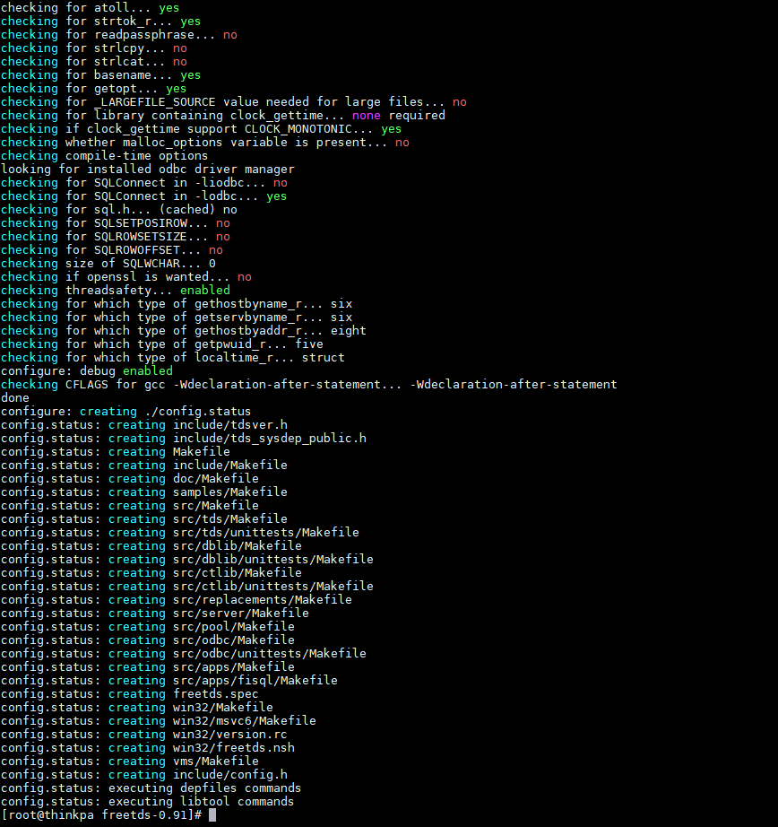

原文连接:https://www.cnblogs.com/alterem/p/11798202.html
导读
官方网站：http://www.freetds.org
下载地址：http://ibiblio.org/pub/Linux/ALPHA/freetds/stable/freetds-stable.tgz
这个软件能够用Linux和Unix连接MS SQLServer和Sybase数据库
安装与配置
首先下载FreeTDS安装包到服务器
wget -c http://ibiblio.org/pub/Linux/ALPHA/freetds/stable/freetds-stable.tgz
解压
tar -zxvf freetds-stable.tgz编译安装
因为是编译安装所以确保机器有安装gcc（可使用yum进行安装）
yum install gcc-c++ yum install ncurses-devel开始安装
cd freetds-0.91/ ./configure --prefix=/usr/local/freetds --with-tdsver=8.0 --enable-msdblib make && makeinstall解释： 安装freetds到目录/usr/local/freetds：--prefix=/usr/local/freetds 支持MSSQL2000：--with-tdsver=8.0 --enable-msdblib



FreeTDS默认安装在/usr/local/freetds目录当中，库文件在相应的lib目录下。
vim /etc/ld.so.conf加入一行/usr/local/freetds/lib然后运行以下指令使更改生效：
ldconfig测试连接
tsql -H MSSQL服务器服务IP -p 1433 -U MSSQL服务器登陆帐号 －P MSSQL服务器登陆密码$ tsql -H XXXXXX-p 1433 -U sa -P XXXXXX -D test locale is "zh_CN.utf8" locale charset is "UTF-8" Default database being set to test 1> select @@version 2> go Microsoft SQL Server 2008 R2 (RTM) - 10.50.1600.1 (Intel X86) Apr 2 2010 15:53:02 Copyright (c) Microsoft Corporation Data Center Edition on Windows NT 5.1 <X86> (Build 2600: Service Pack 3) (1 row affected)问题
Adaptive Server connection failed
locale is "en_US.UTF-8" locale charset is "UTF-8" using default charset "UTF-8" Error 20017 (severity 9): Unexpected EOF from the server OS error 115, "Operation now in progress" Error 20002 (severity 9): Adaptive Server connection failed There was a problem connecting to the server执行
tsql -C[root@thinkpa freetds-0.91]# tsql -C Compile-time settings (established with the "configure" script) Version: freetds v0.91 freetds.conf directory: /usr/local/etc MS db-lib source compatibility: no Sybase binary compatibility: no Thread safety: yes iconv library: yes TDS version: 5.0 iODBC: no unixodbc: no SSPI "trusted" logins: no Kerberos: no发现freetds的版本是5.0，考虑到可能是freetds版本的问题
两种解决方式：
修改全局TDS 版本号
找到
/usr/local/etc/freetds.conf修改[global]下面的tds version为8.0连接时修改tds版本号
TDSVER=7.0 tsql -H整个连接命令则变为：
tsql -H MSSQL服务器服务IP -p 1433 -U MSSQL服务器登陆帐号 －P MSSQL服务器登陆密码
Adaptive Server connection failed
"Cannot open server 'xxxxxxx' requested by the login. Client with IP address 'xxxxxxxxx' is not allowed to access the server. To enable access, use the Windows Azure Management Portal or run sp_set_firewall_rule on the master database to create a firewall rule for this IP address or address range. It may take up to five minutes for this change to take effect." Error 20002 (severity 9): Adaptive Server connection failed这个毋庸置疑了，找管理员开通白名单再访问吧！